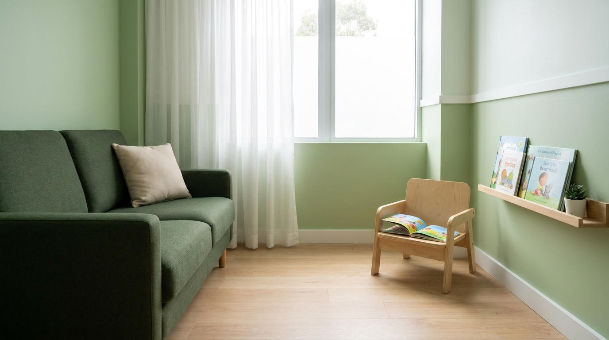
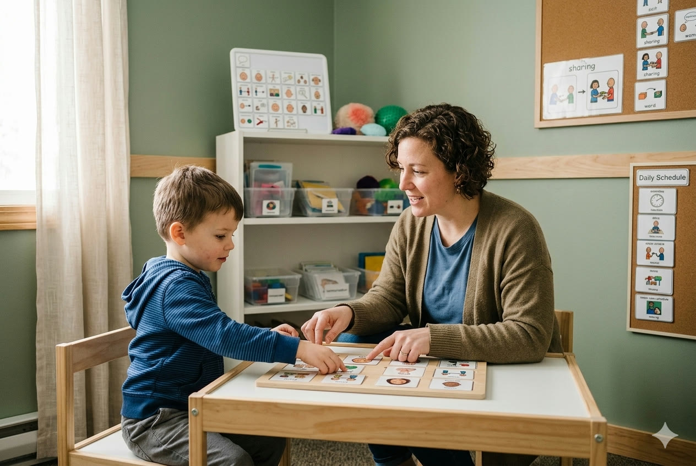
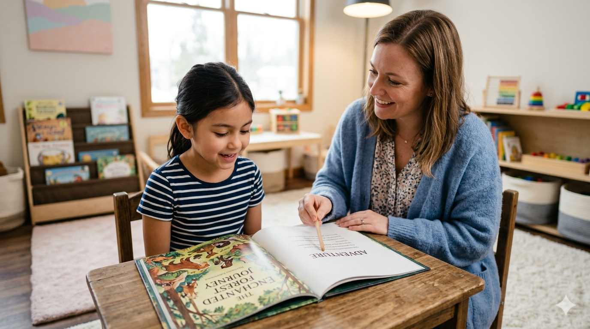
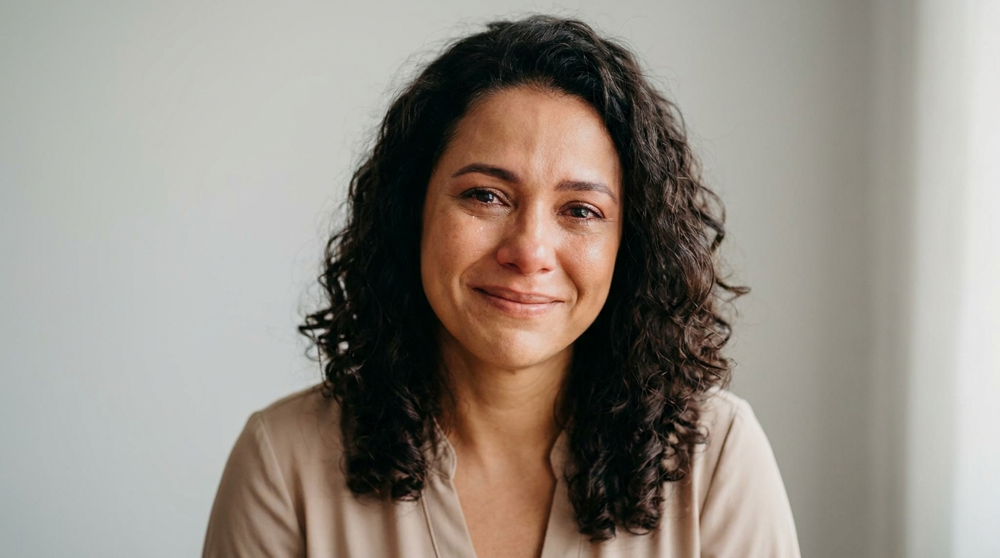

Autismo
O que mais perguntam sobre o Autismo Infantil
Respondemos as principais dúvidas das famílias sobre o Transtorno do Espectro Autista.
Na Clínica Maestria, cada criança tem um modo de aprender que precisa ser identificado para otimizar sua evolução. Oferecemos suporte multidisciplinar em Hortolândia/SP para potencializar o desenvolvimento do seu filho.

Cuidado humanizado, método individualizado e equipe multidisciplinar para o desenvolvimento do seu filho.
Fonoaudiologia, Psicopedagogia, Terapia Ocupacional e mais, integrados para o melhor resultado.
Cada criança tem uma forma de aprender. Identificamos essa forma para otimizar o processo.
Acompanhamos a família em toda a jornada, com escuta ativa e suporte emocional.
Recursos modernos e abordagens atualizadas para potencializar cada atendimento.
Fonoaudióloga (PUC) e Pedagoga (Unicamp), a Dra. Rute Santiago une mais de uma década de experiência clínica em fala e linguagem à sua formação no magistério (CEFAM).
Coautora do livro "Autismo, quando o diagnóstico chega, vol. 2", sua filosofia de atendimento parte da premissa de que cada criança tem um modo único de aprender — e nosso papel é identificar esse modo para otimizar sua evolução.
Na Clínica Maestria, unimos Fonoaudiologia e Psicopedagogia como ponte estratégica entre o diagnóstico clínico e o cotidiano escolar, oferecendo suporte real para famílias em Hortolândia e região.
Conheça nossa equipeFamílias atendidas
Anos de experiência
Especialidades integradas
Satisfação das famílias
Cuidado multidisciplinar integrado para o desenvolvimento pleno do seu filho.

Suporte especializado em Fonoaudiologia e Psicopedagogia para crianças com Transtorno do Espectro Autista.
Saiba mais
Abordagem multidisciplinar para crianças com déficit de atenção e hiperatividade.
Saiba mais
Estimulação de linguagem para crianças que apresentam dificuldades para falar.
Saiba mais
Fonoaudiologia e Psicopedagogia no suporte à leitura e escrita.
Saiba mais
Intervenção especializada para transtorno motor da fala infantil.
Saiba maisAtendimento completo em fala, linguagem, motricidade oral e audição.
Saiba maisHistórias reais de evolução e acolhimento na Clínica Maestria.
Quando chegamos na Maestria, meu filho quase não falava. Hoje ele se comunica, pede o que quer e está mais confiante. A equipe é um presente nas nossas vidas.
O acompanhamento multidisciplinar fez toda a diferença. A parceria entre fono e psicopedagogia ajudou minha filha a avançar na escola e na comunicação.
O diagnóstico de autismo chegou e eu não sabia o que fazer. A Dra. Rute e sua equipe nos acolheram com tanta humanidade. Hoje vejo meu filho evoluir a cada sessão.

Conteúdo educativo para famílias sobre neurodesenvolvimento, fala e aprendizagem.
Respondemos as principais dúvidas das famílias sobre o Transtorno do Espectro Autista.

Saiba identificar os sinais e o momento certo de buscar avaliação fonoaudiológica.
Entenda o papel da Fonoaudiologia e Psicopedagogia no suporte à criança com dislexia.
Agende uma avaliação conosco e descubra como podemos ajudar sua família. Estamos em Hortolândia/SP para te receber de braços abertos.
Fale conosco pelo WhatsApp